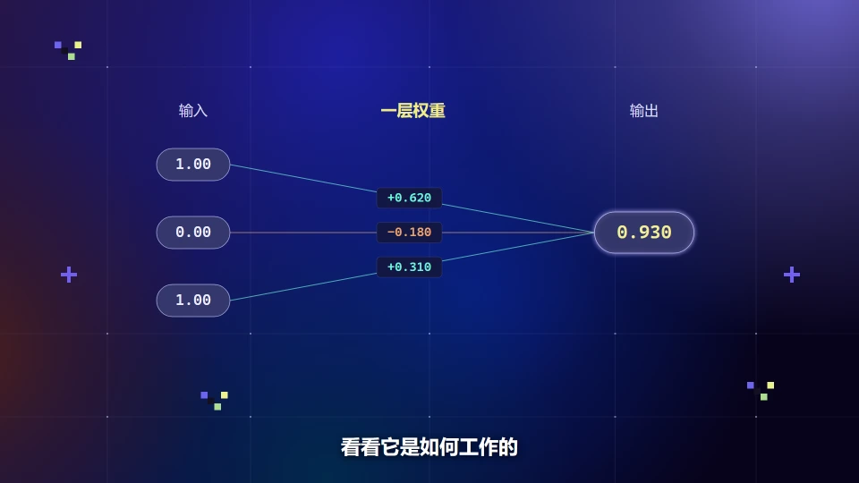
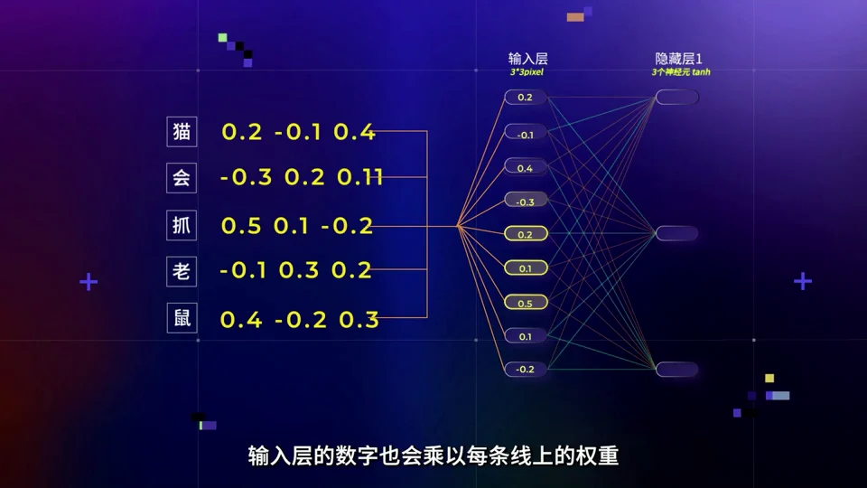
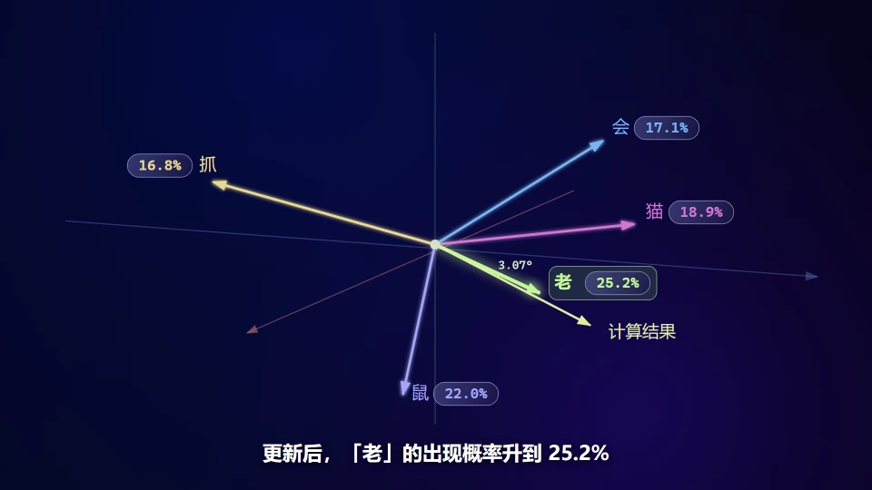

简单的神经网络
- 问题
- 文案称“最简单的神经网络”，但当前配图并非最简单的神经网络，图文不匹配。
- 修改方案
- 二选一： ① 将画面替换为单层神经网络抽象概念图。 ② 去掉文案“最简单”中的“最”字，改为“简单的神经网络”。
采用方案② · 替换 01:43.0–01:47.1 · 4.1 秒

采用方案② · 替换 01:43.0–01:47.1 · 4.1 秒





替换 15:43.7–15:46.8 · 3.1 秒

替换 16:05.5–16:07.8 · 2.3 秒


16:17.8–16:39.9 · 5 个短片段

替换 16:40.08–16:44.48 · 4.4 秒